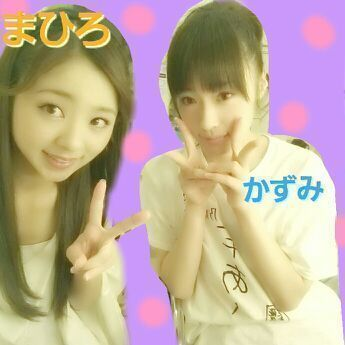
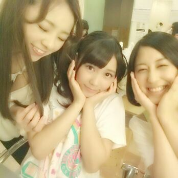
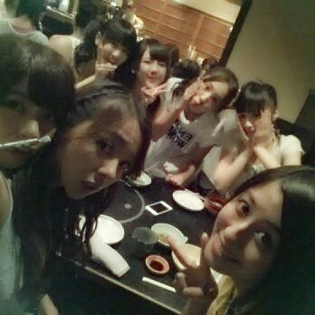

は---い＼(^o^)／
こんちゃんわ〜
ろてぃこで---す ☆☆☆
かずみんとぉ--。

さすがまひろより２年多く
生きてるだけある。笑
頼りになるかっこいい姉ちゃんです！
そ-いえばそ-いえば、
こないだ福岡のliveの時に
博多弁ってのを お勉強してきたよ
(・▽・)！！
っていうのはね
トイレの扉に(博多弁)→(標準語)
って書いた紙が貼られてあって
トイレにそんな紙貼られたら
自然と絶対見てしまうよねっ(/〃▽〃)/笑
博多弁 知りたかったから
助かりました。
すっごい嬉しかった！！
スタッフさんに感謝です ))))
そして、福岡の皆さん、
中には遠くから車や新幹線や飛行機で
来てくださった皆さん
ありがとうございました(о´∀`о)
それにしても乃木坂のメンバーは
雨女が多いのでしょうかっ！？笑
北海道も福岡も雨がふり、
握手会でもよく雨がふり ,,,, 。
い〜つも 天気がすぐれまあ まあ まあ
てーーーーーん。(*´ω｀*)
笑顔でごまかす。

天気に惑わされない。
それが乃木坂46！！！
『かっこいいことゆった...よし。』笑
さあさあ、明日の大阪は
晴れるのかしらあ！？
どーなるか楽しみに
=・ω・=
昨日は１日
乃木どこの収録をやってました!
あっ、そ-いやそ そ-いや
昨日 乃木どこ見たーー？？？
ろってぃ-さん出てたよう(・ω・)どや？
毎週出てるわけじゃないから
私たちが出てる乃木どこは貴重よ。あは
見てくれたと言われるのを期待
( ☆∀☆)笑
福岡のlive後写真♪
皆でわちゃわちゃタイム。

ちはる 自分 ななせ。
ではではっ、
またすぐ更新しまーーす (*´∀｀)
今日も１日がんばろーね。
ろってぃ-でしたっ ))))
のし